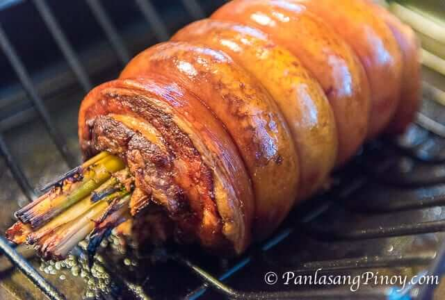

Lechon Liempo (Filipino-Style Roasted Pork Belly)

Source: Serious Eats
Description
Lechon liempo takes the tastiest portion of the swine—the belly—and
gives it the slow-roasted treatment that results in succulent meat and crackling skin.
It's enough to just roll up a piece of belly and put it on the spit,
but I took the extra step of seasoning the inside with garlic paste.
As you can see, there's some unevenness on the pig skin but that's of little importance,
as it did nothing to hold back the sheer awesomeness of the juicy,
flavorful belly meat and the salty, crunchy rind.
It's one grilled treat that's hard to beat.
Ingredients
- 4 tablespoons olive oil
- 2 tablespoons minced garlic k
- 2 tablespoons salt
- 1 tablespoon white vinegar
- 2 teaspoons freshly ground black pepper
- 1(5-pound) piece pork belly, skin on
Steps
- In a small bowl, whisk together oil, garlic, salt, vinegar, and black pepper.
- Lay pork belly on a cutting board skin-side down. Score flesh diagonally about every 2-inches.
Repeat in opposite direction, creating a diamond pattern. Spread garlic mixture evenly all over flesh.
- Roll pork into a cylinder and tie tightly with butcher twine about every inch.
- Light one chimney full of charcoal. When all the charcoal is lit and covered with gray ash,
pour out and arrange the coals on either side of the charcoal grate and place a foil pan between the two piles of coals.
Cover grill and allow to preheat for 5 minutes. Run spit of the rotisserie through middle of pork and secure ends with rotisserie forks.
Place on the rotisserie, cover, and cook at medium heat until skin has darkened and crisped and pork registers 160oF
when an instant read thermometer is inserted into the thickest part of the meat, about 3 hours, replenishing coals to maintain
temperature as needed. Remove from grill and let rest for 10 minutes.
Remove spit, slice, and serve.